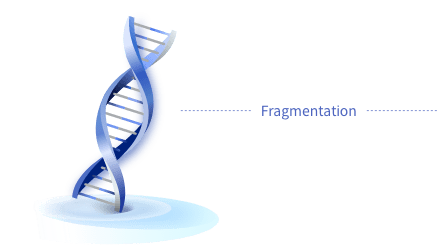
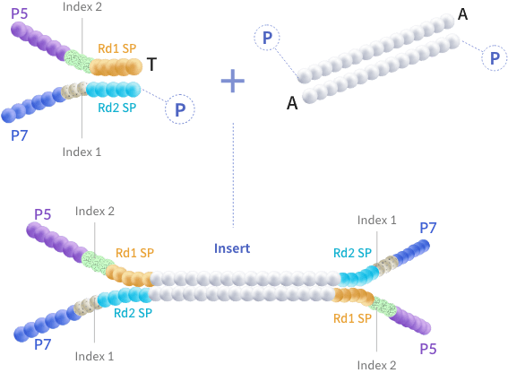
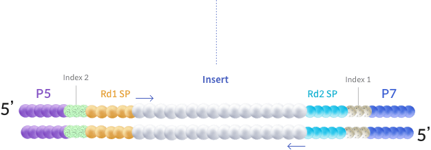
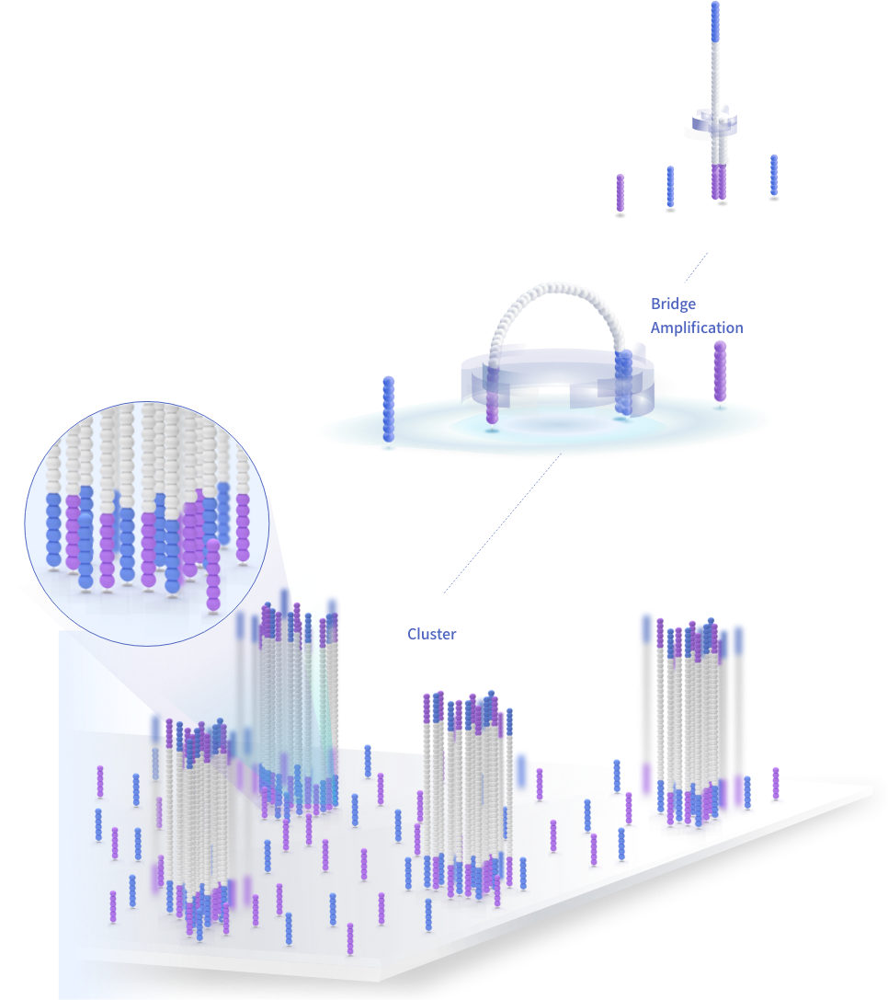
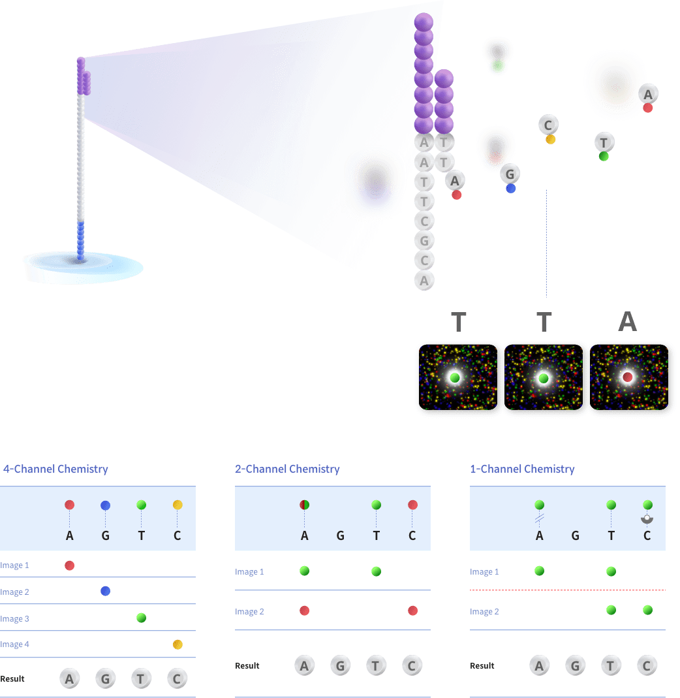

The samples are prepared according to NGS library preparation workflow, and sequenced using Illumina platform.
The workflow illustrated below shows the common ligation based method of library preparation. The process may differ based
on the library preparation protocol followed.

DNA/RNA is first extracted from the sample,
and samples which meet quality control standards
proceed to library construction.

The sequencing library is prepared by random fragmentation of the DNA or cDNA sample,
followed by 5' and 3' adapter ligation. Alternatively, "tagmentation" combines the fragmentation
and ligation reactions into a single step which greatly increases the efficiency of the library
preparation process.

Adapter-ligated fragments are then PCR amplified with a PCR primer solution which anneals
to the ends of each adapters.
The library templates undergo quality control and quantification process.
The library is loaded onto a flow cell where fragments are captured on
a lawn of surface-bound oligos complementary to the library adapters.
Each fragment is then amplified into distinct clonal clusters through bridge
amplification. Once cluster generation is complete, the templates are ready
for sequencing.

Illumina SBS technology utilizes a proprietary reversible terminator-based method that detects single bases as they are incorporated
into DNA template strands. As all 4-reversible, terminator-bound dNTPs are present during each sequencing cycle, natural competition
minimizes incorporation bias and greatly reduces raw error rates compared to other technologies.
The result is highly accurate base-by-base sequencing that virtually eliminates sequence-context-specific errors, even within repetitive
sequence regions and homopolymers.

| * MiSeq™ and HiSeq™ Series | * MiniSeq™, NextSeq™, and NovaSeq™ Series | * iSeq 100 System |
Systems using four-channel chemistry uses a mixture of nucleotides labeled with four different fluorescent dyes.
Similarly, two-channel chemistry makes use of two different fluorescent dyes, and one-channel chemistry uses only one dye.
The images are processed by an image analysis software to determine nucleotide identity.
The Illumina sequencer generates raw images utilizing sequencing control software for system control and base calling, through integrated
primary analysis software called RTA (Real Time Analysis).
The BCL/cBCL (base call) binary files are converted into FASTQ files using bcl2fastq, which is an Illumina provided package.
Adapters are not trimmed away from the reads.